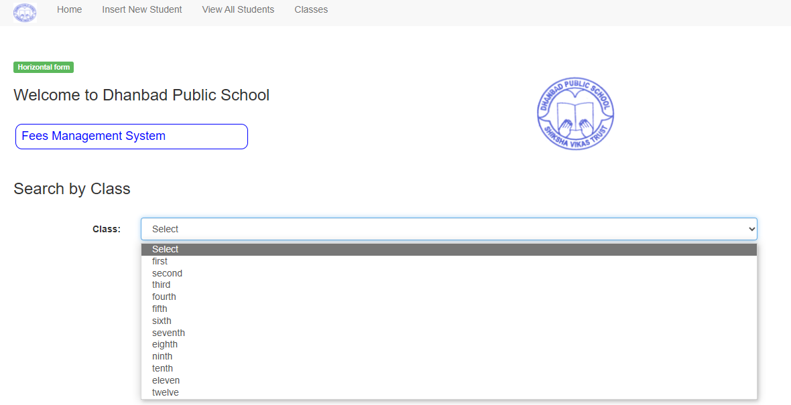
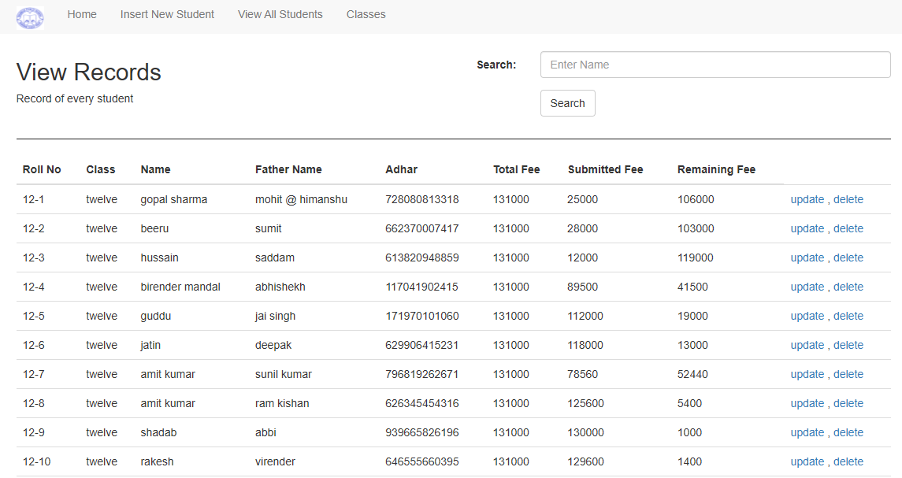
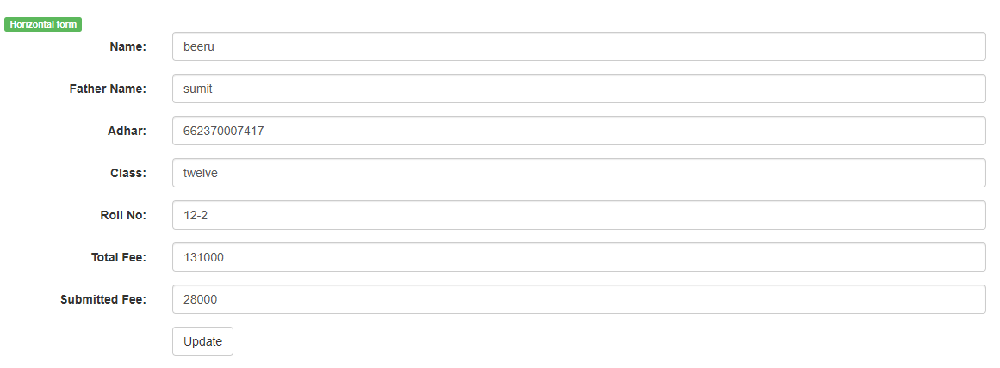
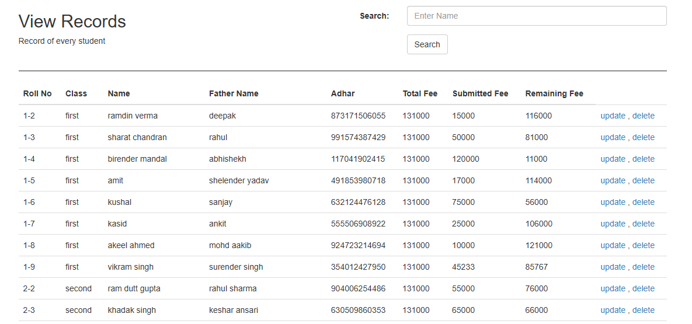
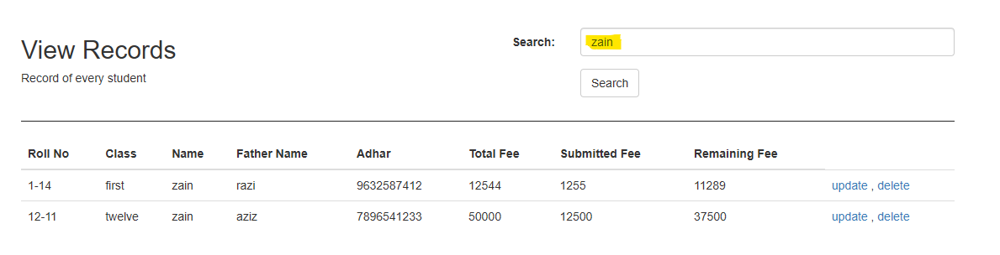
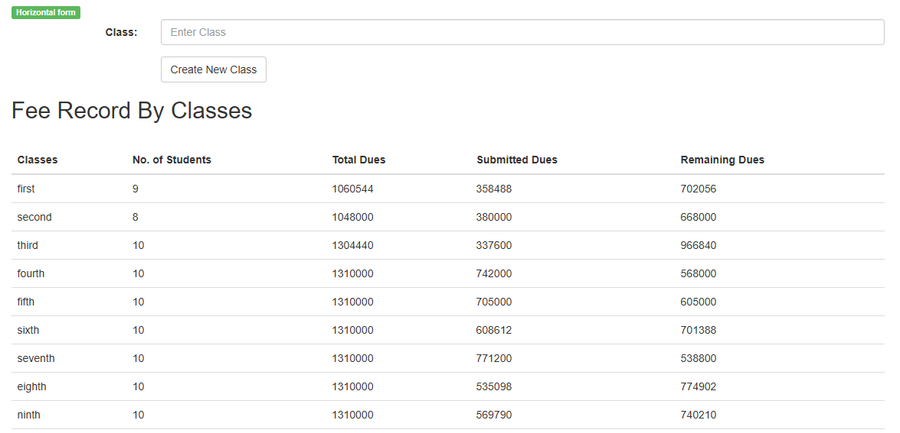
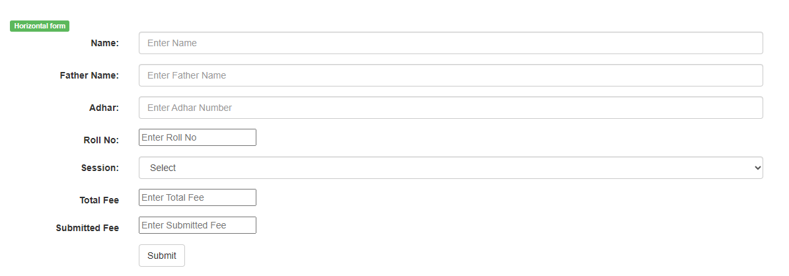

Fee collection and management are crucial tasks for all educational institutions. In the earlier days, school office staff used to collect the fees manually from the students and parents, providing printed receipts to each of the students after fee collection. It was tedious and hectic work for the administrators to collect and manage fees. But in today’s world, educational institutions started implementing cloud and mobile-based school management software that made the process, smoother and much easier.
MySql
HTML
CSS
Python
Flask
It contains the front page of the frontend which provides the facility to search from given classes of the school from 1-12. It uses Sessions table for giving the result.
 Search :This function is succession of home page. When the search button is clicked, this function is invoked. It uses Student and Fees table. It gives output as the view of student with there details from a specific class along with a facility to update or delete the record. For updating it uses Student and Fees table for changing the fees details of a particular student.When delete is used record of a particular student is removed from the student table
 Update Function :  View AllThis function gives the complete details of each student along with the amount of fees paid. It uses all the three tables for accessing these details.
It contains an added feature to search for a specific student by their name.
 Classes :This function gives result as total number of students in every class along with the total due and the amount paid. It uses Student, Sessions, Fees table for giving the output.
 Insert New Student :This feature gives the facility to add new student to database. It gives specific field for providing the information about the student. It uses all the three tables.
Fees management systems are an important tool for educational institutions looking to improve the efficiency and accuracy of their fees management processes. While there are challenges associated with implementing and maintaining such systems, the benefits they offer make them an attractive option for many institutions.
© 2022 Mohd Zain
Powered by Bootstrap
Published on : 07 Sep,2022
Updated on : 01 sep,2023 Version:1.7
Updated on : 01 sep,2023 Version:1.7